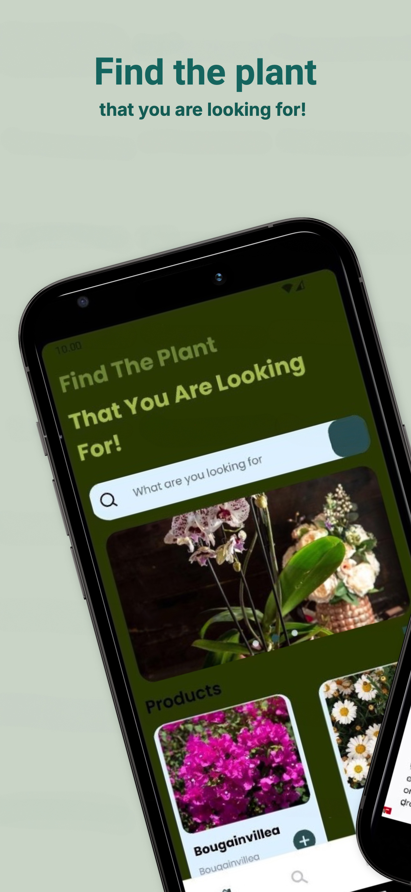
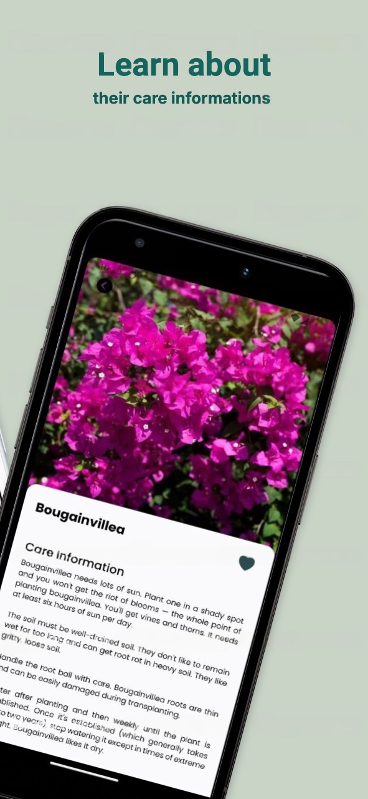
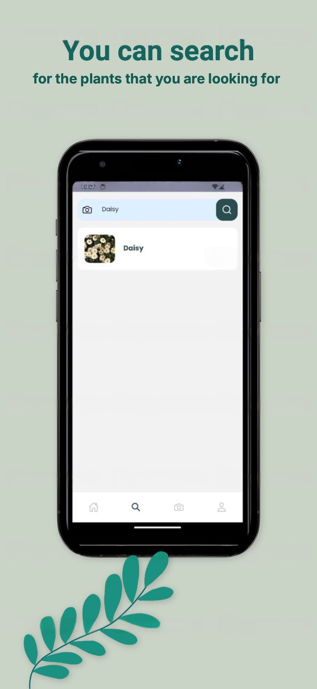
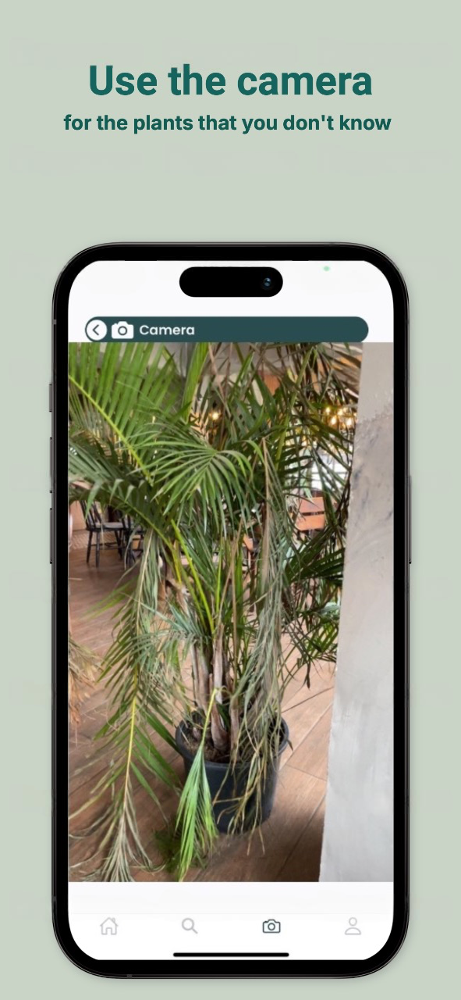
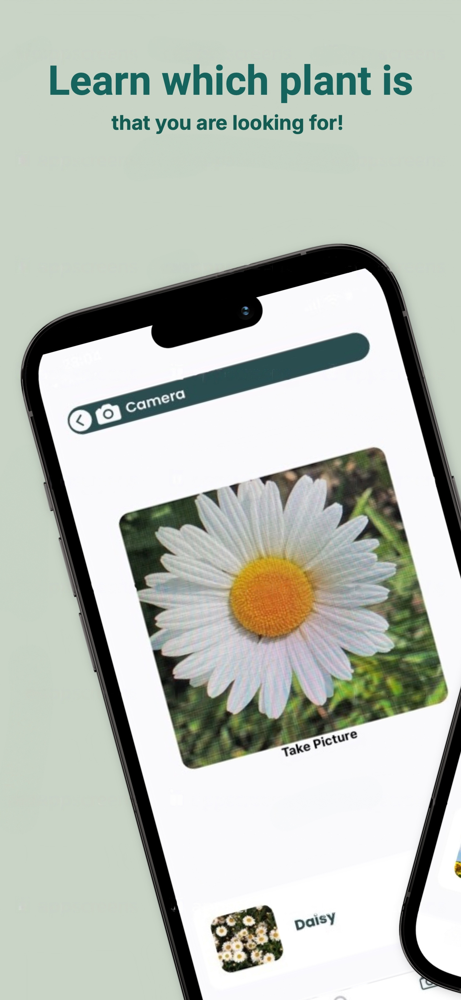
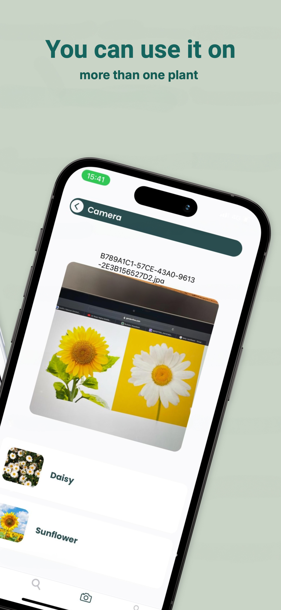
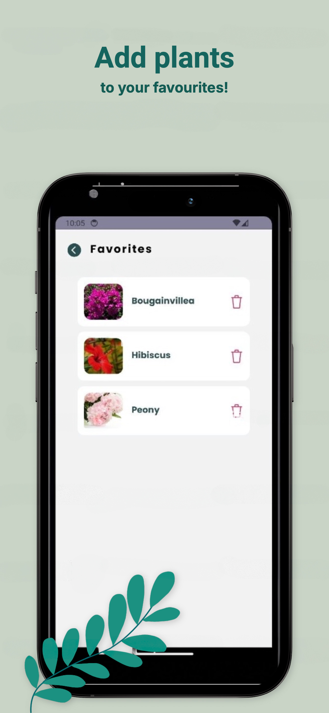
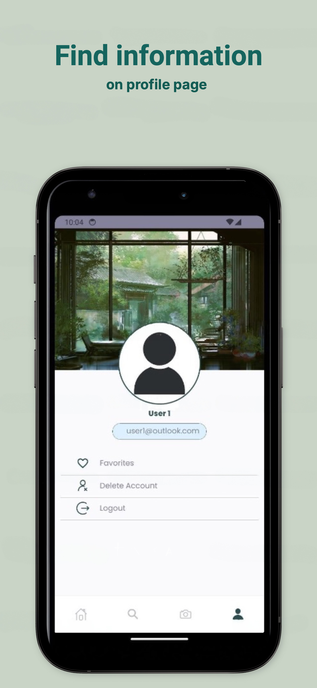

Plant Identifier App
Project Overview
This project aims to develop a mobile application that uses image processing and machine learning technologies to recognize plants and provide care information. The app allows users to take photos of plants, identify them, and receive detailed care instructions. It also includes a database of plant information that users can browse and search.
Features
Plant Recognition: Utilize a machine learning model trained with labeled plant datasets to identify plants from photos.
Care Information: Provide users with detailed care instructions for identified plants.
Plant Database: Include information on various plant species, accessible through browsing and search functionality.
Image Processing: Implement image processing algorithms to analyze photos taken by the app.
Technical Details
Model Training: Roboflow for dataset labeling and model training.
Image Processing: Python for developing image processing algorithms.
Mobile Development: React Native and JavaScript for building the mobile application.